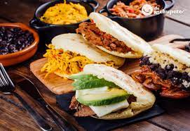
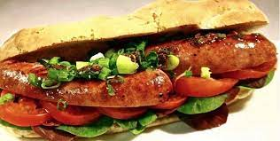

CONOCIENDO DOS GASTRONOMIAS
¿Cual es tu manera de prepararlas?
Aporta tus anecdotas preparando arepas

Entra en este post y conoce todos los detalles ¡te sorprenderás!
Comidas rápidas
¿Cual nos recomiendas?

Probemos la comida callejera en Argentina
Entra en este post y mira el video ¡te sorprenderás!
Lo que necesitarás para preparar arepas
- Bol para amasar
- Agua para diluir la harina
- Vaso para medir los ingredientes
- Harina de maiz precocida de tu marca preferida
- Sal
- Aceite
- Anafe o cocina
- Plancha o budare de hierro
Como se preparan las arepas
- Colocar 200ml de agua en el bol e ir agregando la harina poco a poco y revolver hasta formar una masa firme
- Una vez lograda la masa de textura suave que despegue de los dedos, formar pequeños bollos redondos
- Formados los bollos, aplanar hasta obtener una discos pequeños
- Calentar la plancha o budare y una vez caliente, bajar a fue medio
- Untar aceite con un papel sobre la plancha e ir colocando los discos de la masa